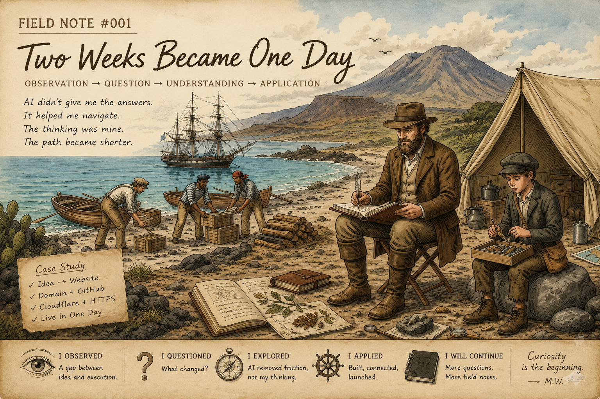
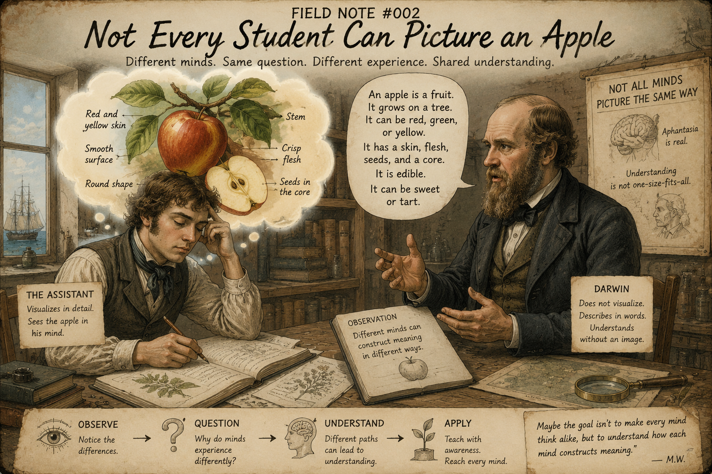

Education Field Notes
Observations at the intersection of teaching, cognition, and artificial intelligence.
Every field note begins with an observation—not a conclusion.
Read Field NotesA scientist’s notebook on learning and technology
Observations at the intersection of teaching, cognition, and artificial intelligence.
AI should not replace student thinking. It should make thinking visible.
A field journal for careful observations, working questions, and classroom-tested demonstrations—not a marketing website.
The question I’m exploring
Observations at the intersection of teaching, cognition, and artificial intelligence.
Every field note begins with an observation—not a conclusion.
Read Field NotesA teacher-designed AI learning guide that asks questions, encourages observation, challenges reasoning, and makes student thinking visible.
Explore Curiosity CoachCurrently exploring
Education Field Notes
Observations at the intersection of teaching, cognition, and artificial intelligence.
Education Field Notes is an ongoing exploration of human learning through the eyes of a classroom teacher.
Rather than presenting definitive answers, each Field Note begins with a classroom observation, follows the questions it raises, and explores where curiosity leads next.

A classroom observation about the compression of expertise, the changing value of process, and the need to keep student thinking visible as AI enters learning.
Read Field Note
A simple classroom observation about aphantasia becomes an exploration of mental models, cognition, and what AI may teach us about human learning.
Read Field NoteA task that once required two weeks of searching, comparing, drafting, and revising can now be compressed into a single day. That compression is not just a productivity story. It is an education story.
I am watching artificial intelligence change the relationship between time, expertise, and learning. Work that once required extended effort can now be accelerated dramatically. The result is impressive, but it also raises a deeper question: what happens to learning when the visible struggle disappears?
In education, time has never been only a scheduling problem. Time is where students notice patterns, make mistakes, compare sources, revise explanations, and develop judgment. If AI compresses the task without preserving the thinking, students may arrive at a finished product without building the habits that make the product meaningful.
Curiosity Coach began as a teacher-designed demonstration of a different possibility. Instead of using AI to skip the work, the project asks whether AI can slow students down at the right moments: observe before explaining, infer from evidence, revise when new information appears, and make reasoning visible through interaction history.
The demonstration matters because it shows a distinction schools will need to make carefully. AI can produce answers quickly, but it can also create records of student thinking that were previously hard to see. The same technology that compresses time can, if designed well, reveal the process inside that time.
I do not think the answer is to reject AI or to celebrate it uncritically. The observation is simpler: AI changes the timescale of intellectual work. Education now has to decide which parts of that work should become faster and which parts must remain visible, deliberate, and human.
Curiosity Coach — A teacher-designed AI learning guide that asks questions, encourages observation, challenges reasoning, and makes student thinking visible.
Explore Curiosity Coach →I recently learned about aphantasia—the inability to voluntarily form mental images.
It immediately made me rethink a classroom activity where students closed their eyes and built a “mind palace.” I had assumed everyone was visualizing the same cave, but they probably were not.
Some students may have seen vivid scenes. Others may have organized ideas without forming any mental picture at all.
Until that moment, I had never questioned my assumption that everyone experienced visualization in roughly the same way.
That observation led to larger questions.
How many classroom strategies assume students think the way we do?
How often do teachers say, “Picture this,” without realizing some students do not experience mental imagery the same way?
Maybe the more important question is not whether students think alike, but whether teachers recognize that they do not.
I often ask:
Is the Sun on fire?
Most students answer yes.
Instead of correcting them, I ask why.
What does a fire need?
They usually answer:
Then I ask:
Where is the oxygen?
The focus is not necessarily about the correct answer.
It is about uncovering the mental model behind the answer.
Maybe learning is not simply replacing incorrect facts with correct ones.
Maybe it is about reconstructing mental models.
AI did not give me this observation.
It helped me connect it to a much larger question.
What if the next frontier in education is not teaching differently, but understanding more clearly how students construct meaning?
Curiosity Coach is a teacher-designed AI learning guide that helps students think through observation, questioning, evidence, and reflection rather than simply providing answers.
Explore Curiosity Coach →Curiosity is not the conclusion.
It’s where the next observation begins.
Practical experiments
This section contains classroom-facing experiments, prototypes, and instructional ideas developed from real teaching questions. Curiosity Coach remains the flagship project, but it is one example within the broader Education Field Notes philosophy: teacher-guided AI that supports inquiry, evidence, reasoning, and visible student thinking.
The flagship Education Field Notes project: a teacher-designed AI learning guide that asks questions, prompts observations, challenges reasoning, and makes student thinking visible.
Explore the DemoA guided inquiry experience using Galápagos marine iguanas to model observation, inference, adaptation, and natural selection.
Emerging concepts for using AI to support critical thinking, media literacy, scientific reasoning, and student agency.
Placeholder space for future prototypes that test how AI can support student questioning, feedback, and reflection.
Curiosity Coach
Curiosity Coach helps students observe, question, infer, revise, and explain. Instead of giving answers away, it guides students through the thinking that leads to stronger learning.
When students use AI only to get answers, they can skip the struggle to observe, reason, test ideas, and explain evidence. Curiosity Coach starts from a different question: how can AI slow students down enough to make their thinking visible?
The Curiosity Coach approach
Students begin with what they can see, notice, or measure.
They turn observations into better scientific questions.
They connect clues to possible explanations.
They predict what could happen and why.
They adjust ideas when new evidence appears.
They build a final explanation using evidence and reasoning.
Each student response shows what they noticed, what they misunderstood, how their reasoning changed, and whether they can connect evidence to a conclusion.
Darwin Demo
Featuring Charles Darwin as your field mentor
Darwin is the first example mentor in this guided investigation, but the purpose is scientific inquiry: students observe evidence, ask questions, make inferences, test hypotheses, revise thinking, and explain with reasoning.
This interactive prototype demonstrates the instructional framework behind Curiosity Coach. It does not use a Large Language Model. Instead, it uses a scripted decision tree to show how students can be guided through observation, questioning, inference, hypothesis, revision, and explanation.
Because this prototype follows predefined pathways rather than understanding natural language, visitors may occasionally need to rephrase or clarify an answer. Curiosity Coach uses an LLM to understand the meaning behind student responses, adapt its coaching in real time, and personalize guidance while remaining under teacher control.
The purpose of this prototype is to demonstrate the instructional design — not the AI itself.
Start with specific details you can see before making an explanation.
Instructional design
Teachers determine the content, focus, standards, images, and instructional goals. Curiosity Coach supports—not replaces—instruction.
AP, standard, ESE, and ELL students can receive different levels of scaffolding while working toward the same instructional goal.
The same visible-thinking framework can support science, algebra, history, ELA, media literacy, and source evaluation.
About
I spent my career observing weather, then biology, and now education.
Before teaching, I served as a U.S. Navy meteorologist and oceanographer. Later, as a Biology and Environmental Science teacher, I kept using the same habit: look carefully first, name the evidence, and avoid conclusions that arrive too quickly.
Education Field Notes is a long-term exploration of what artificial intelligence is doing to learning, expertise, classroom practice, and student thinking. I don’t claim to know where AI will lead. I simply document what I observe as carefully as I can.
Every field note begins with curiosity.
AI should not replace student thinking. It should help make thinking visible.
Contact
Questions, observations, and thoughtful field notes are welcome.